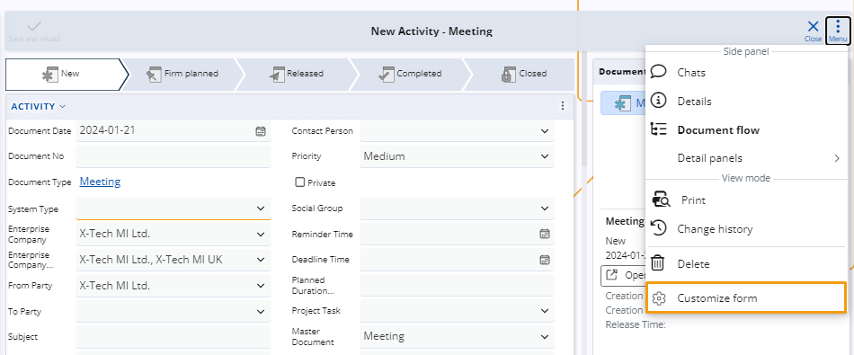
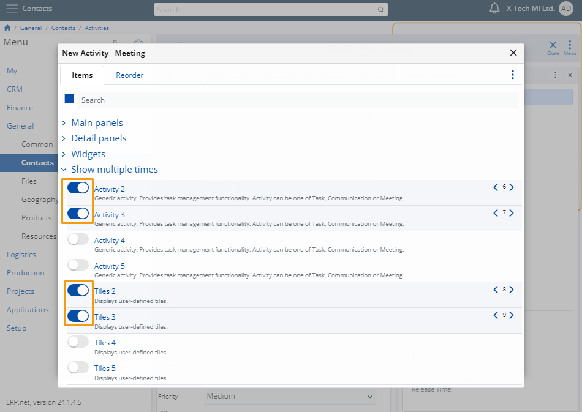
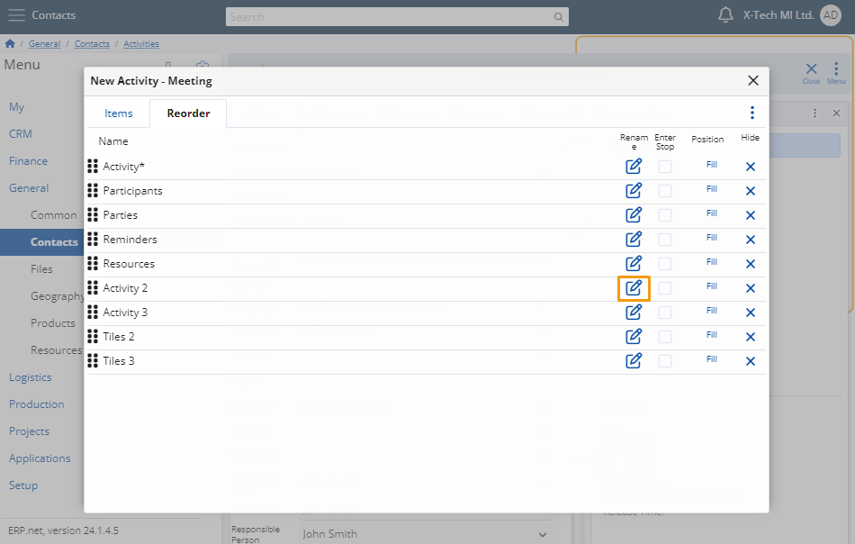
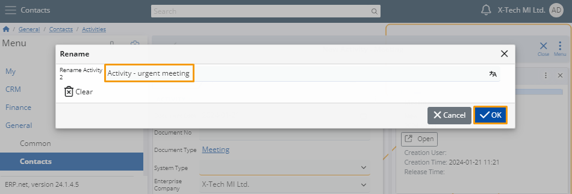
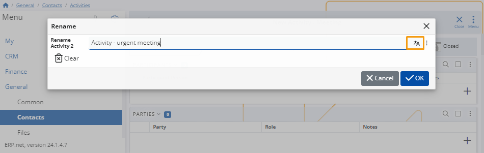

How to add multiple instances of a panel type
While customizing a form, you can add certain panels in it multiple times.
Each added panel is assigned a unique name, which can be modified when necessary.
One and the same panel cannot be displayed more than five times within a single form.
Add panels
You can customize a form by clicking on the Menu button and choosing Customize form.

In the window, navigate to the Items tab аnd click on Show multiple times to expand a menu with slider buttons.
By clicking on the slider, you can add or remove the panel from the form. Each panel can be displayed up to 5 times in a single form.

Rename a panel
If necessary, you can rename each panel to better customize it for your form.
To do so, navigate to the Reorder tab and click the Rename button for the specific panel you wish to rename.

Enter the desired name and click OK to save the changes.

Translate a panel
You can also add a translation in a language of your choice with the Translate button.
When the language of the platform is changed, it will reflect this translation automatically.

Note
The screenshots taken for this article are from v24 of the Web Client.